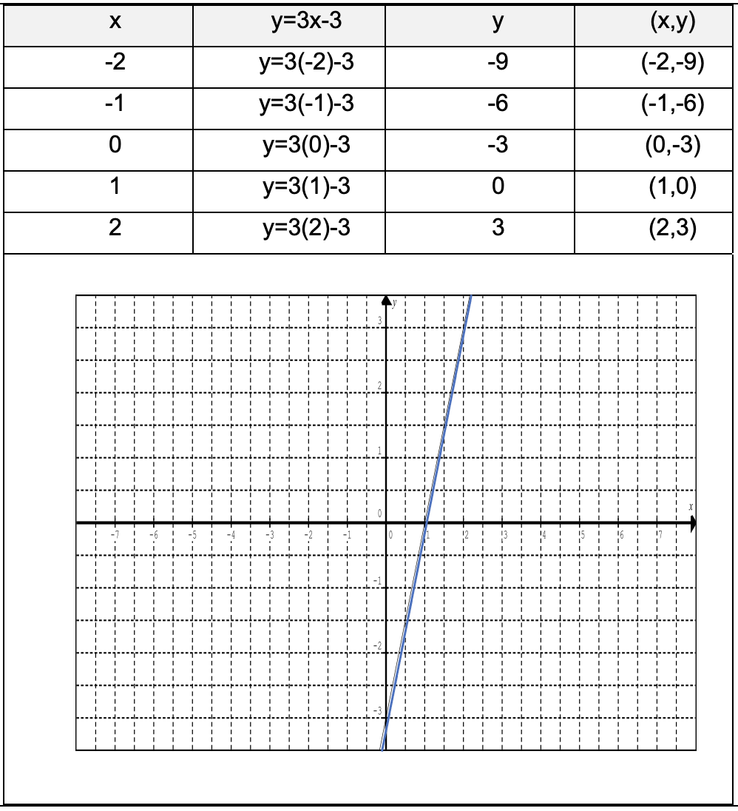
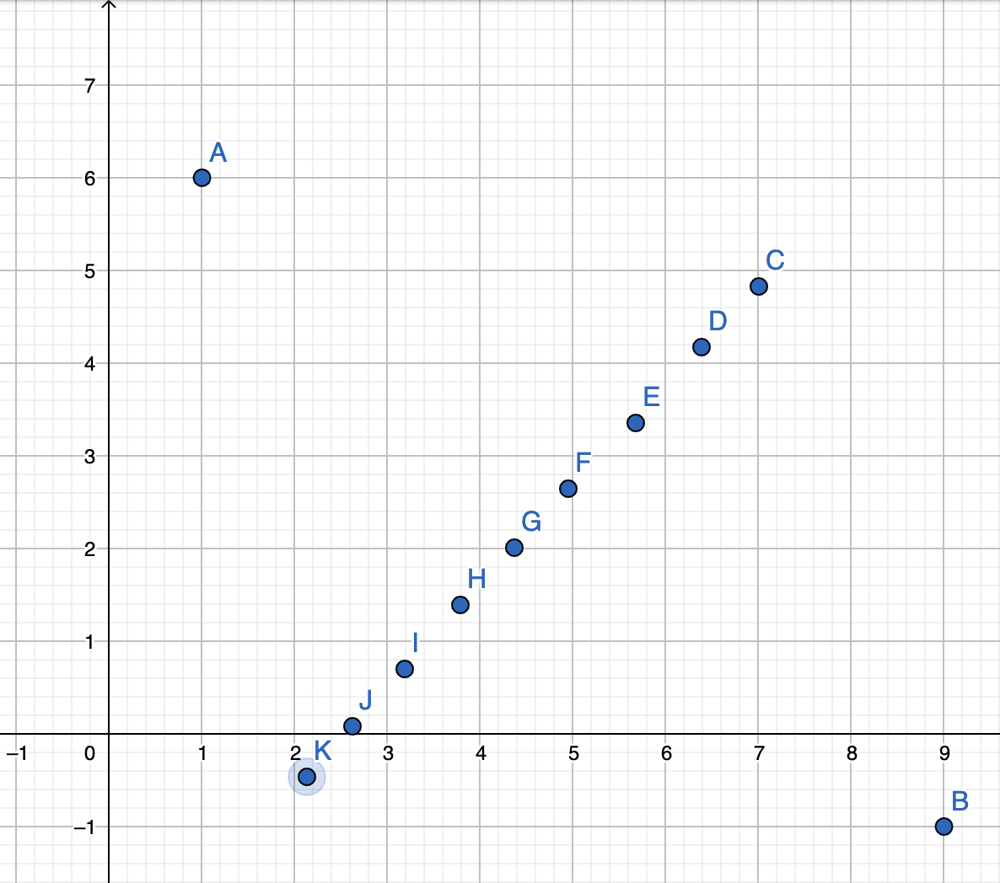
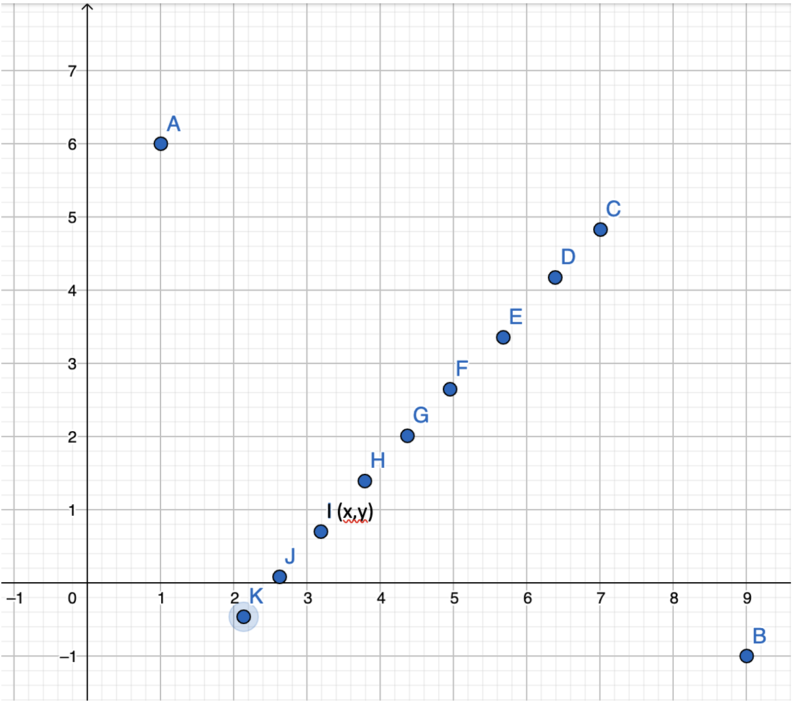
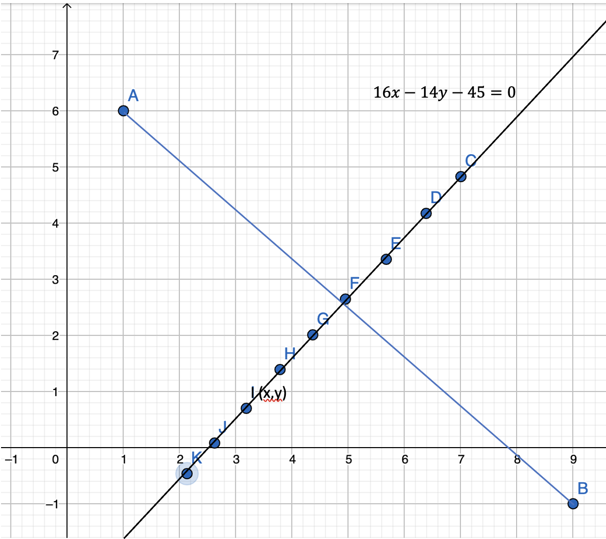

Un lugar geométrico es el conjunto de puntos $(x, y)$ en el plano que cumplen con una misma propiedad o condición geométrica. Dicha condición es representada mediante una ecuación de la forma $f (x, y) = 0$. El conjunto de puntos cuyas coordenadas satisfacen tal ecuación recibe el nombre de gráfica de la ecuación, o bien, su lugar geométrico. Un lugar geométrico puede cumplir con una o más condiciones a la vez.
Ve el siguiente video:
Video explicativo sobre lugar geométrico.
Lugar Geométrico.
Ejemplo 1
La ordenada es el triple de la abscisa menos tres unidades. La ecuación que satisface la condición es:
$y = 3x-3$, que de tus clases de Matemáticas I, recordarás que se trata gráficamente de una recta.
Recordarás que:

Gráfica del lugar geométrico.
Ejemplo 2
Determinar la ecuación del lugar geométrico definido por todos los puntos del plano que están a la misma distancia de los puntos $A (1,6)$ y $B (9,-1)$.
Localizamos el primer punto que debe estar a la misma distancia de A y de B, que es el punto medio, luego al tanteo coloca otros que estén a la misma distancia de $A$ y $B$.

Localización de puntos que cumplen con las condiciones para determinar el lugar geométrico.
Tomamos un punto en este caso I (x,y)

Ubicación del punto I en el plano cartesiano.
Calculamos la distancia del punto A al punto I y la del punto B al punto I, cómo deben ser las mismas igualamos:
$\sqrt[2]{(x-1)^2+(y-6)^2}=\sqrt[2]{(x-9)^2+(y-(-1))^2} $
Elevando la ecuaciones de ambos lados
$(x-1)^2+(y-6)^2=(x-9)^2+(y+1)^2$
Desarrollando tenemos:
$16x-14y-45=0$
Esta ecuación representa el lugar geométrico de la línea recta, llamada mediatriz del segmento AB.

Gráfica del lugar geométrico.